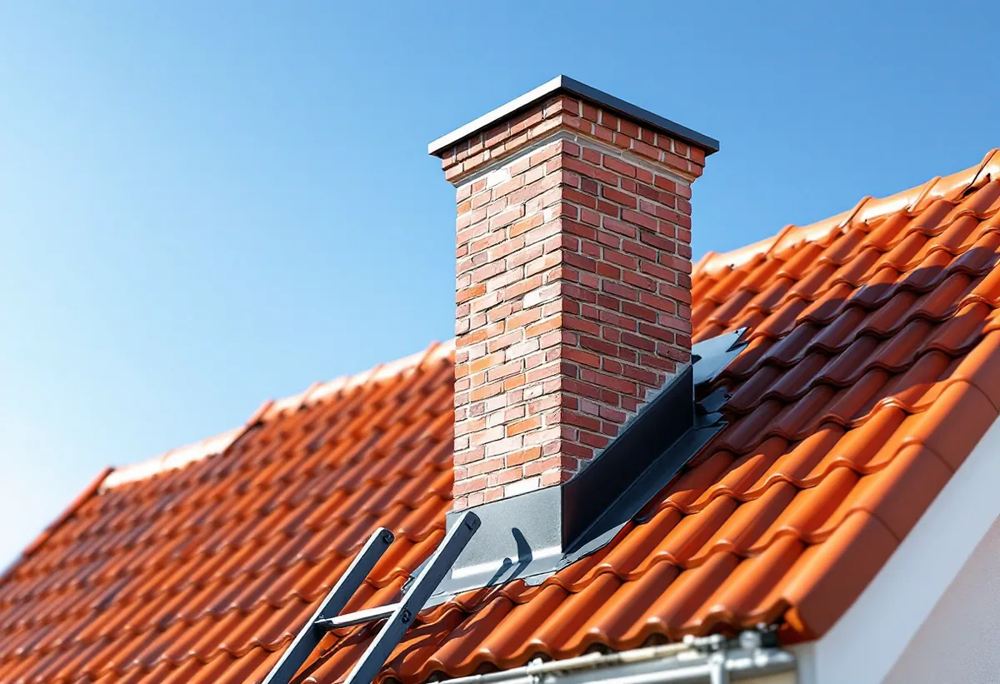
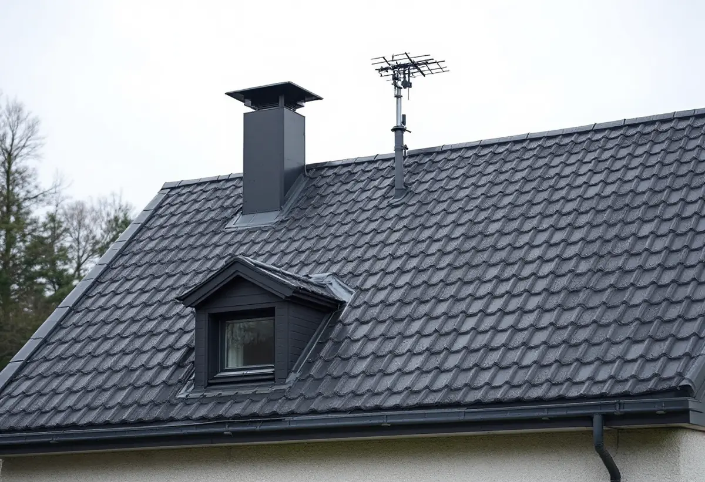

Platsbesök
Vi går igenom tak, vind och varje genomföring: skorsten, huvar, antenn och takfönster.
När ett tak byts i Nacka är pannorna sällan det svåra. Det är allt som går genom taket – skorstenen, ventilationshuvarna, antennen och takfönstren – som avgör vad som behöver stämmas av innan arbetet börjar. Geal Entreprenad AB byter tak på villor och radhus i hela Nacka och går igenom varje genomföring vid ett gratis platsbesök.
Nacka kommun listar vad som räknas som fasadändring, och där står inte bara byte av färg eller material på fasad eller tak. Även antenner, ventilationshuvar och skorstenar finns med, liksom nya fönster och dörrar. Boverket skriver på samma sätt att antenner, solenergianläggningar och aggregat för ventilation, kyla och värme kan räknas som fasadändring när de monteras, flyttas eller ändras på ett tak.
Inom detaljplan krävs inte längre bygglov för fasadändringar på ett en- eller tvåbostadshus, men åtgärden får inte strida mot detaljplanen. Kommunen påpekar också att ett ingrepp i den bärande konstruktionen kräver en anmälan. Det kan bli aktuellt om en murstock ska tas bort eller om takstolar behöver ändras för ett nytt takfönster. Därför går vi igenom varje genomföring innan nya pannor beställs, och skriver in i kostnadsförslaget vad som flyttas, tas bort eller blir kvar.

Ett takbyte är ett naturligt tillfälle att bestämma vad som ska hända med skorstenen. Plåten runt den görs om när pannorna byts, och krönet kan lagas medan ställningen står. Planerar du samtidigt en ny eldstad gäller andra regler. Nacka kommun skriver att en anmälan ska göras för att installera en ny eldstad eller väsentligt ändra en befintlig, till exempel genom att sätta in en tyngre eldstad eller byta bränsleslag. En skorsten som byggs utanpå fasaden kan dessutom kräva bygglov för fasadändring om huset ligger i en kulturmiljö.
När en ny eldstad är installerad ska den besiktigas av en sotare, och kommunen ger slutbesked innan den får användas. Vi samordnar takarbetet så att skorstenen är klar och tätt inplåtad innan eldstaden tas i bruk. Skatteverket räknar att mura och reparera skorstenar på ett småhus som rotarbete, men inte att kontrollera eldstäder och skorstenar. Mer om lagning och omputsning finns under skorstensrenovering.
För fastigheter som ligger i ett område som är särskilt värdefullt enligt 8 kap. 13 § plan- och bygglagen utökas bygglovsplikten. Kommunen skriver att bygglov då krävs för samtliga fasadändringar på fastigheten om områdets karaktär eller byggnadens yttre karaktärsdrag påverkas. Ett nytt takmaterial, en ny huv på gatusidan eller en borttagen skorsten kan alltså bli en lovfråga.
I kommunens karta visar lila markering byggnader och områden med särskilt höga kulturvärden. Orange markering betyder att det kan pågå ett arbete med att bedöma de kulturhistoriska värdena, och då hänvisar kommunen till Stadsbyggnadsservice. Om husens historia och takens epoker i kommunen kan du läsa under takrenovering i Nacka, och om plåttak nära farleden under plåtslagare i Nacka.
Inför lagändringen den 1 december 2025 skrev kommunen att fler åtgärder får göras utan bygglov, men att ansvaret för att veta vad som gäller hamnar hos fastighetsägaren. Om något byggs felaktigt är risken stor att det blir ett tillsynsärende, och kundrådgivarna på Stadsbyggnadsservice berättar att många tillsynsanmälningar kommer från grannar som inte känt till vad som skulle göras. Deras råd är att vara påläst, ha god framförhållning och prata med grannarna tidigt.
Ett takbyte märks på tomterna runt omkring. Ställningen kan behöva stå nära tomtgränsen, och gammalt tegel och papp ska fraktas bort. Vi går igenom placeringen vid platsbesöket så att du kan berätta för grannarna vad som händer och hur länge. I kommunens webbkarta finns både gällande detaljplaner och äldre stads- och byggnadsplaner, och den är ett bra första steg. Vad vi gör i övrigt i kommunen finns under takläggare i Nacka, och hur ett byte går till i stort under takbyte.

Vi går igenom tak, vind och varje genomföring: skorsten, huvar, antenn och takfönster.
Detaljplanen och kommunens kulturmiljökarta kontrolleras för fastigheten.
Rivning, underlag, pannor, plåt och genomföringar står var för sig.
Ställning och container placeras som vi har gått igenom med dig.
Gammalt tak rivs, underlaget ses över och nytt tak läggs med ny plåt kring genomföringarna.
Vi går igenom taket, skorstensplåten och huvarna tillsammans med dig.
Enligt Skatteverket ger det rotavdrag att byta takpannor, plåttak, hängrännor och stuprör på ett småhus, liksom att mura och reparera skorstenar, sätta upp och ta ner byggnadsställningen och byggstäda efteråt. Att forsla bort byggmaterial och skräp ger däremot inget avdrag.
Avdraget är högst 30 procent av arbetskostnaden, högst 50 000 kr per person och år och högst 75 000 kr tillsammans med rutavdrag. Material och resor räknas inte. Du ska äga huset när arbetet görs. Geal drar avdraget direkt på fakturan.
Takets yta och lutning, materialet, hur många genomföringar som ska plåtas in eller flyttas, skorstenens skick, hur mycket råspont som behöver bytas och hur ställningen kan stå på en tomt med berg eller nivåskillnader. En överblick finns i vad kostar ett takbyte. Efter ett gratis platsbesök får du ett skriftligt kostnadsförslag.
Byte av tegel-, betong- och plåttak.
Takbyte →Takbyte, takbesiktning och plåtarbeten.
Takläggare i Nacka →Saltsjöbaden, Boo och Älta.
Takrenovering i Nacka →Saltsjöbanan, kommunens mark och kulturkartan.
Attefallshus i Nacka →VA, LTA och dagvatten på tomten.
Byggföretag i Nacka →Uthus, räcken och plåt kring villan.
Fasadmålning i Nacka →Villasamhällena vid Saltsjöbanan.
Fönsterbyte i Nacka →Linoljefärg, väder och verkstad för villafönster.
Fönsterrenovering i Nacka →Slipa och olja trägolvet.
Golvslipning i Nacka →Farledens plåttak och Saltsjöbadens villor.
Plåtslagare i Nacka →Villastäder, sommarhus och radhus.
Badrumsrenovering i Nacka →Sommarvillor, stugor och villor i Nacka.
Fasadrenovering i Nacka →Sommarvillor, stugor och hus med källarplan.
Golvläggare i Nacka →Radhuskök, sekelskiftesvillor och vedspis.
Köksrenovering i Nacka →Panelvillor och sommarnöjen i Nacka.
Målare i Nacka →Verandor, panel och altaner.
Snickare i Nacka →Ny tapet och dold dekor i äldre villor.
Tapetsering i Nacka →Strandskydd och villasamhällen.
Tillbyggnad i Nacka →Nytt värmesystem när huset ändå görs om.
Totalrenovering i Nacka →